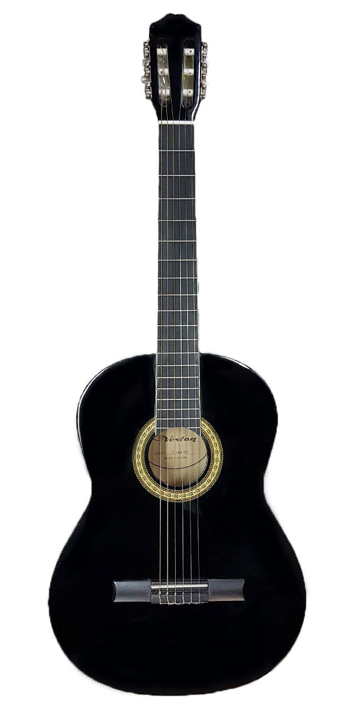

VESTON C-45A BK
6 620 руб.
Классическая

VESTON C-45A BK – полноразмерная классическая акустическая гитара отличного качества, доступная по демократичной цене. Такая гитара будет отличным выбором для начинающих музыкантов и обучающихся игре на инструменте. Корпус VESTON C-45A сделан из древесины агатиса. Гриф – из клёна, накладка также кленовая. На грифе 20 ладов без инкрустации. Представленная модель классической гитары стильно выглядит в черном цвете с глянцевой лакированной отделкой и хромированной фурнитурой. На ней установлены мягкие нейлоновые струны.
Ссылка на источники
- Интернет-магазин МузТорг, URL:https://www.muztorg.ru/product/A073575 (Режим доступа: свободный, дата обращения: 15.02.2023)
- Дэйв, Хантер Акустическая гитара: справочник-самоучитель / Хантер Дэйв. — 2-е изд. — Нью-Йорк : Феникс, 1999. — 256 c. — Текст : непосредственный.